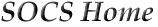

The Student Organization for Cognitive Science (SOCS) is a student organization representing students interested in Cognitive Science. We sponsor many activities throughout the year to increase awareness about Cognitive Science and provide an outlet for cogsci students to meet each other and interact. We host many events including weekly discussion meetings and film/discussions where we show a popular movie related to cog. sci. accompanied by a discussion lead by an IU faculty member. As our membership grows we plan to host larger events including guest lectures, forums, and collaborations with other departments and student organizations with interests overlapping with Cognitive Science. Please visit our events page to find a specific list of upcoming events.
SOCS 2003: We are alive! With new members and officers, this year promises many exciting events. Starting immediately, please check back often for updates, especially in the events arena.